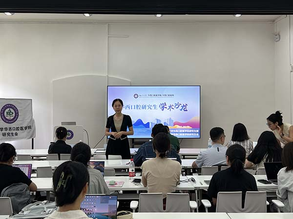

学院通知 · 科研创新
“前沿交叉，双擎驱动”修复学系研究生学术沙龙活动圆满举办
发布时间：2025/06/26
2025年6月19日，我院研究生部联合修复学系成功举办研究生学术沙龙系列活动。本次沙龙聚焦“基础研究与临床研究”双主题，特邀蔡潇潇教授、甘雪琦教授、王剑教授担任点评嘉宾。 在基础研究环节，乔铭薪博士（导师：万乾炳教授）展示了墨鱼骨仿生MOFs基超弹凝胶敷料在活动创面抗感染修复中的创新应用；李宜珂博士（导师：沈颉飞教授）深入解析GluN1剪接变体调控NMDA受体功能参与口颌面神经痛的新分子机制；赵轶硕士（导师：袁泉教授）通过单细胞测序跨物种比较，揭示了小鼠与人类牙周炎免疫机制的差异特征。 临床研究专场中，冯豪博士（导师：王剑教授）研发的柔性压电纳米发电机实现了无线传感技术的突破性进展；饶思晗博士（导师：于海洋教授）以目标修复空间为指导，分享了一例全口牙列磨损伴四环素牙的数字化功能美学重建病例；邓晨博士（导师：满毅教授）则系统论证了种植同期骨膜技术在多场景下的临床转化价值。 三位点评教授针对汇报内容逐一点评，现场师生学术对话氛围浓厚；通过基础与临床的双向赋能，有效拓展了研究生学术视野，为后续研究方向及科研成果转化提供了新视角。
